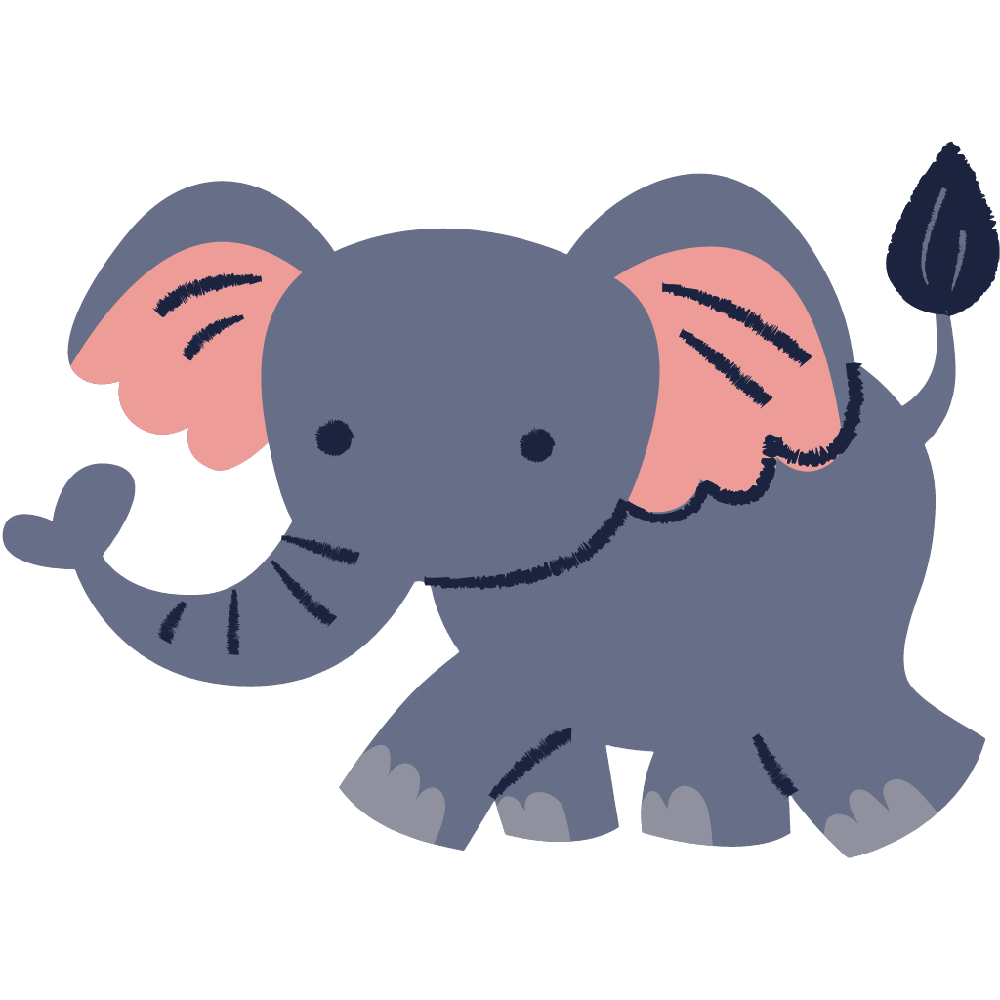
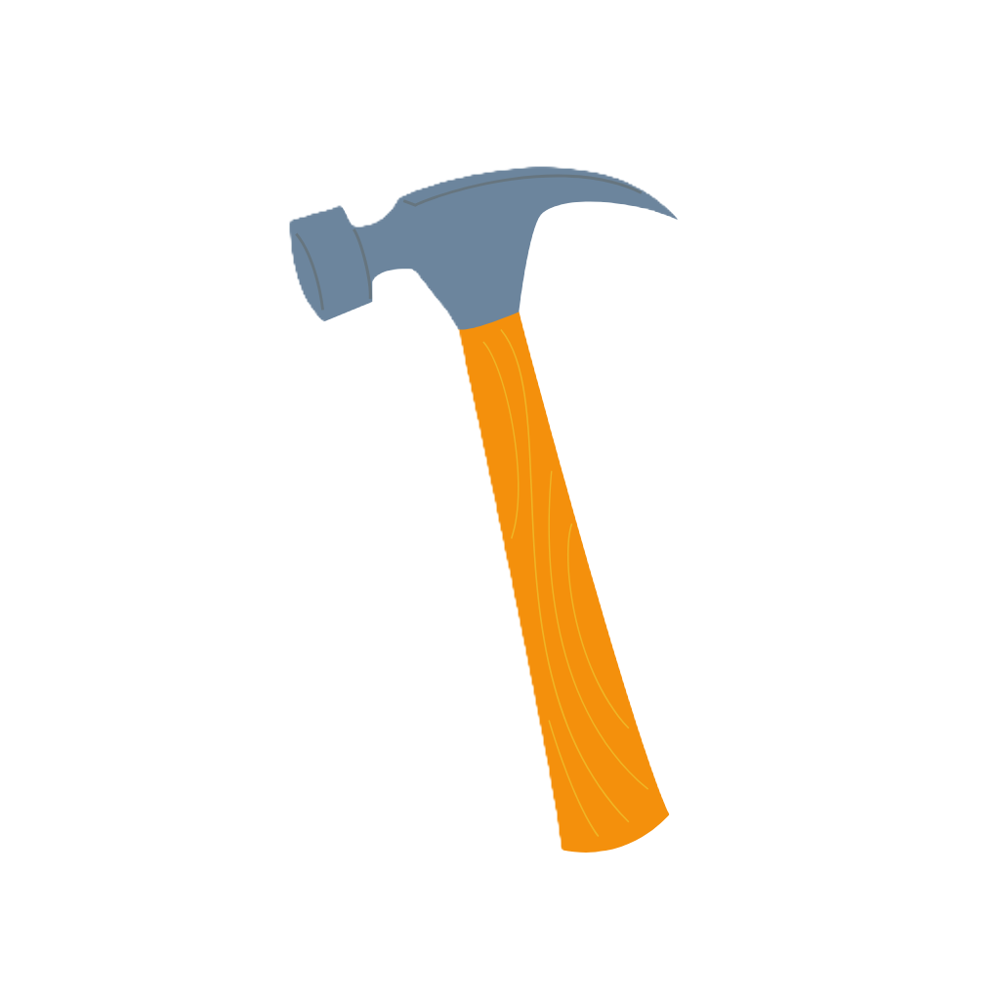
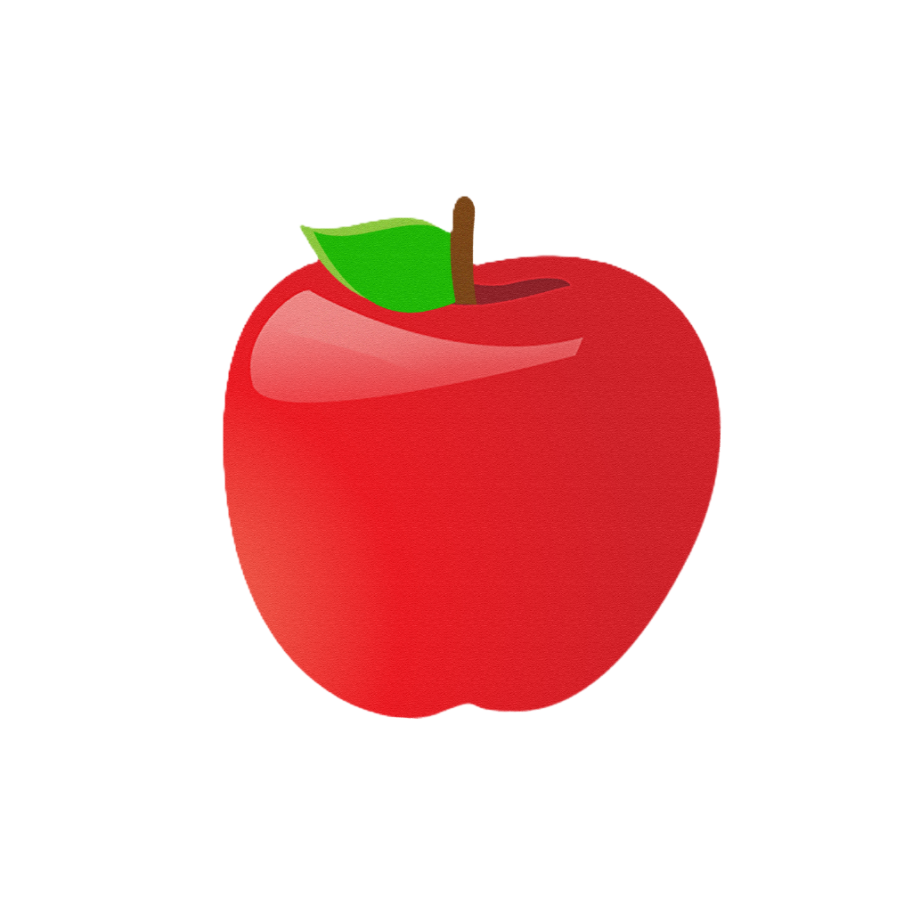

<ion-header>
  <ion-toolbar color="secondary">
    <ion-buttons slot="start">
      <ion-back-button defaultHref="" (click)="onVolver()"></ion-back-button>
    </ion-buttons>
    <ion-title>Tabla de puntuación</ion-title>
  </ion-toolbar>
</ion-header>

<ion-content>
  <div class="tabla">
    <ion-segment value="facil" (ionChange)="onChangeDif($event)">
      <ion-segment-button value="facil">
        <ion-label>Fácil</ion-label>
      </ion-segment-button>
      <ion-segment-button value="medio">
        <ion-label>Medio</ion-label>
      </ion-segment-button>
      <ion-segment-button value="dificil">
        <ion-label>Difícil</ion-label>
      </ion-segment-button>
    </ion-segment>

    <h1>Mejores 5 registros:</h1>
    <ion-grid>
      <ion-row>
        <ion-col class="head">Nombre</ion-col>
        <ion-col class="head">Tiempo</ion-col>
        <ion-col class="head">Fecha</ion-col>
      </ion-row>
      <ion-row *ngFor="let user of this.topPuntos">
        <ion-col class="body">{{user.usuario}}</ion-col>
        <ion-col class="body">{{user.tiempo}} segundos</ion-col>
        <ion-col class="body">{{user.fecha}}</ion-col>
      </ion-row>
    </ion-grid>

    <div *ngIf="this.dificultad == 'facil'">
      
    </div>
    <div *ngIf="this.dificultad == 'medio'">
      
    </div>
    <div *ngIf="this.dificultad == 'dificil'">
      
    </div>
  </div>
</ion-content>
